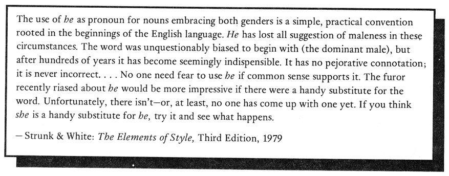

.endnotes
Editor's Note: Two newly-available magazines spotlighting modernist issues of women and language and featuring many critical pieces by women poets, are: Poetics Journal, No.4, available at Cody's or Small Press Traffic or Small Press Distribution, and from 2639 Russell St., Berkeley, CA 94705; and the bi-lingual Canadian modernist/feminist magazine, Tessera, appearing as a special issue of the ongoing Room of One's Own, and featuring the complete texts of papers delivered last summer at the Canadian conference, "Women and Words / Les femmes et les mots." Co-edited by Daphne Marlatt, and available from: 3756 W. 2nd Ave., Vancouver V6R 1J9, Canada.  HOW(ever) is available in a first series of four issues, for $5. Subscription checks should go to: HOW(ever), c/o Jaffer, 871 Corbett, San Francisco, CA 94131. All editorial correspondence can be sent to: Fraser, 554 Jersey St., San Francisco, CA 94114. Original poetry manuscripts will be considered at the beginning of the second series. The second series of four issues will begin appearing in October, 1984. Subscriptions for series 2 will cost $6 for individuals, $8 for institutions and libraries. Single copies are not for sale, nor are free sample copies available. Your subscription and support is invited. The HOW(ever) logo was designed by Dodie Bellamy. go to this issue's table of contents
|